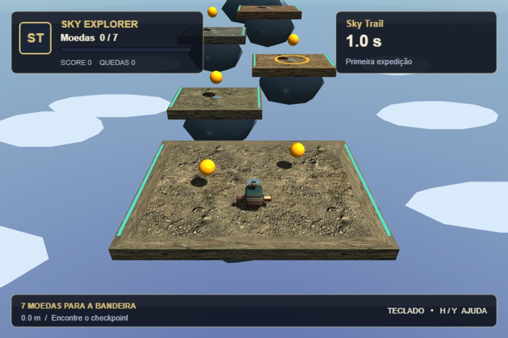
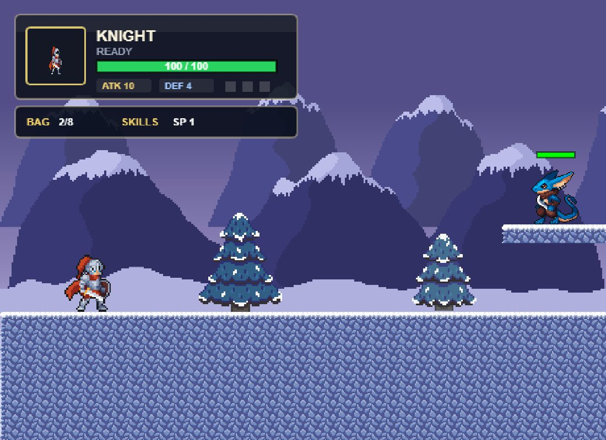
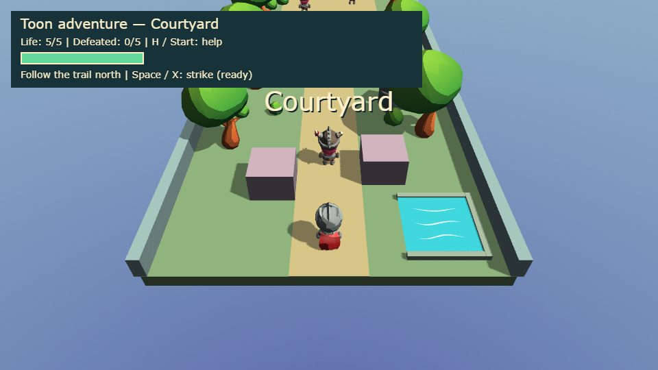

Publique o necessário.
Selecione grupos de runtime e addons em gameforgejs.package.json. O build inclui as
dependências entre grupos, sem reescrever seu jogo.
Framework experimental · 2D + 3D
Do primeiro personagem a mundos próprios. Uma framework para criar jogos no navegador, com classes, componentes e controle sobre o que você constrói.
JavaScript nativo. Canvas 2D. WebGL2.
Node.js é uma ferramenta opcional de
desenvolvimento.

01 / Experimente
Exemplos jogáveis para explorar movimento, combate, câmera, renderização e regras de jogo. As demos são experimentais.

Combos, hitboxes, inventário, habilidades e fases descritas por manifests.
Quatro expedições, menu 3D com gamepad, checkpoints e plataformas móveis.

Personagens animados, cinco sentinelas, três áreas e água rasa com ondulações.
As demos são pequenos jogos experimentais. Os cursos completos e as próximas metas estão descritos abaixo.
02 / Uma base, não uma caixa-preta
Níveis organizam a cena. Entidades recebem comportamentos. Telas e renderizadores cuidam da apresentação. Evolua o jogo sem abandonar as classes que já funcionam.
Entender a arquitetura da framework ↗import { BootstrapGame }
from "gameforgejs/core";
import { AppModule }
from "./src/modules/AppModule.js";
import { FirstLevel }
from "./src/levels/FirstLevel.js";
BootstrapGame({
modules: [AppModule],
configPath: "./config/game.config.json",
manifestPath: "./config/resources.json",
levels: [new FirstLevel()],
});Exemplo do runtime modular. O template configura o import map e fornece o nível inicial.
03 / Evolução com propósito
A modularização organiza a distribuição e as extensões. O caminho principal continua sendo
BootstrapGame, níveis, entidades e componentes.
Selecione grupos de runtime e addons em gameforgejs.package.json. O build inclui as
dependências entre grupos, sem reescrever seu jogo.
Parallax, máquina de estados e movimento de plataforma extraídos das demos. Classes que usam os serviços da framework, sem inicializar uma segunda engine.
Checkpoints já disponíveis para combate ABS, modelos animados e água rasa. A meta continua: aventura Toon completa e plataforma 2D com pelo menos 20 fases e inimigos com comportamentos variados.
O Zero to Hero ainda não está concluído. Jogos, códigos, assets, lições e validação serão finalizados em conjunto ao término das modificações.
Acompanhar o roteiro de desenvolvimento ↗04 / Seu próximo projeto
Comece pelo template, escolha os módulos necessários e evolua seu jogo em passos pequenos. As demos acima usam esse mesmo runtime.
git clone --branch master \
https://github.com/Drakopit/GameForgeJS.git
cd GameForgeJS
npm ci
npm startDepois, visite /examples/showcase/index.html
no endereço informado pelo servidor.